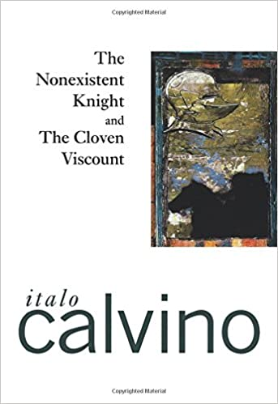
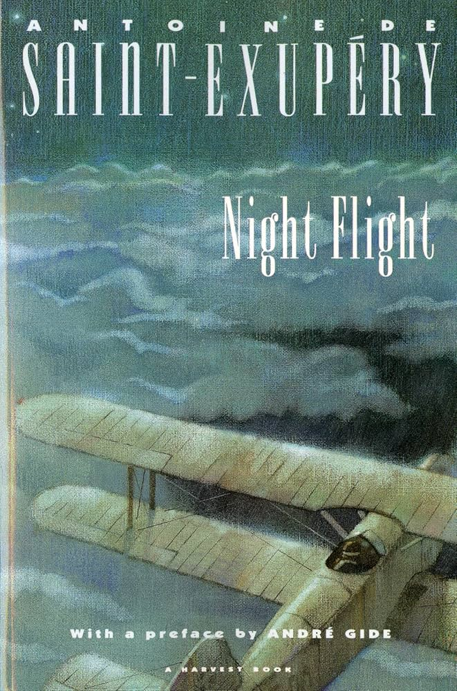

Featured Books
Step into our collection and explore the stories we love the most.
-
The Nonexistent Knight by Italo Calvino
A surreal and philosophical tale set in the Middle Ages, following a knight who exists only as an empty suit of shining armor. A brilliant exploration of identity and existence.

-
Night Flight by Antoine de Saint-Exupéry
A poetic and gripping novel about the early days of aviation, capturing the breathtaking beauty and deep solitude of flying through a starry night sky.

-
Ficciones by Jorge Luis Borges
A mesmerizing collection of short stories exploring infinite libraries, labyrinths, and parallel realities. It is the ultimate guide to getting lost in the Bookverse.